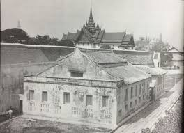
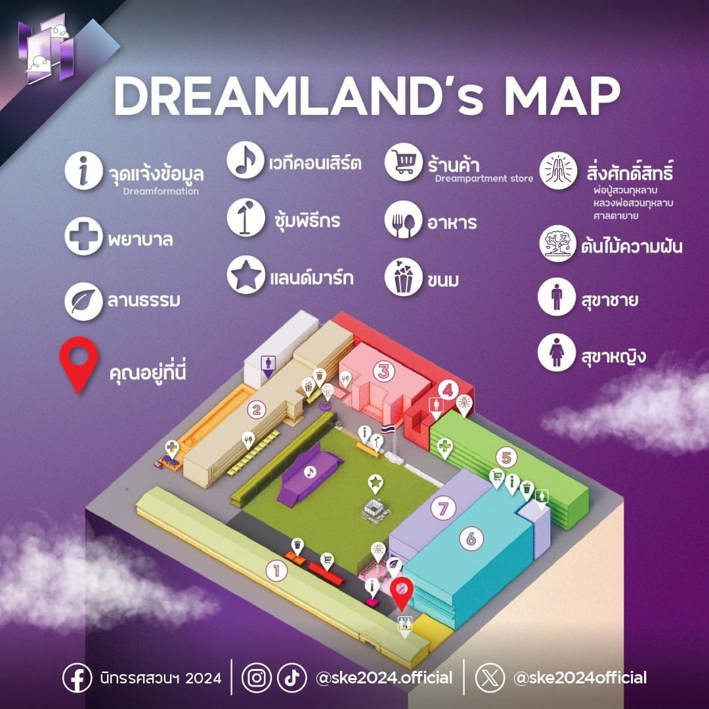

เเนะนำโรงเรียนสวนกุหลาบวิทยาลัย
ประวัตืความเป็นมา
โรงเรียนสวนกุหลาบวิทยาลัย (อังกฤษ: Suankularb Wittayalai School) เป็นโรงเรียนชายล้วน ระดับชั้น มัธยมศึกษาขนาดใหญ่พิเศษ สังกัดสำนักงานเขตพื้นที่การศึกษามัธยมศึกษาเขต 1 สำนักงานคณะกรรมการการศึกษาขั้นพื้นฐาน
ก่อตั้งโดย พระบาทสมเด็จพระจุลจอมเกล้าเจ้าอยู่หัว ได้รับการสถาปนาขึ้นในวันที่ 8 มีนาคม พ.ศ. 2424 ถือเป็นโรงเรียนรัฐบาลแห่งแรกของประเทศไทย
โรงเรียนตั้งอยู่เลขที่ 88 ถนนตรีเพชร แขวงวังบูรพาภิรมย์ เขตพระนคร กรุงเทพมหานคร บนเนื้อที่ 11 ไร่ 2 งาน 23 ตารางวา ประกอบด้วยอาคารเรียน 7 หลัง สนามฟุตบอล สระว่ายน้ำ โรงอาหาร อาคารอเนกประสงค์ และหอประชุม
มีการจัดการเรียนการสอนในช่วงชั้นการศึกษาที่ 3 และ 4 ระดับมัธยมศึกษาตอนต้น จำนวน 39 ห้องเรียน มัธยมศึกษาตอนปลายจำนวน 45 ห้องเรียน รวมทั้งสิ้น 84 ห้องเรียน ในรูปแบบ 13-13-13 / 15-15-15
วิสัยทัศน์,พันธกิจ
โรงเรียนสวนกุหลาบวิทยาลัย
เป็นสถาบันการศึกษาชั้นนำในเวทีโลก
สร้างสุภาพบุรุษสวนกุหลาบ
มีความสุขบนพื้นฐานคุณธรรม
เเละวืถีความเป็นไทย
สัญลักษณ์ของโรงเรียน

สัญลักษณ์ของโรงเรียนสวนกุหลาบวิทยาลัยประกอบด้วยตราประจำโรงเรียนเป็นรูปหนังสือที่มีพระเกี้ยวยอดและอักษรย่อ จ.ป.ร. (รัชกาลที่ 5) มีช่อดอกกุหลาบ 4 ดอกและคำว่า "โรงเรียนหลวงสวนกุหลาบ"
ตราเสมาชมพู-ฟ้า สำหรับเครื่องแบบนักเรียนมัธยมศึกษาตอนปลาย ตราสัญลักษณ์เป็นด้ายปักรูปทรงใบเสมาสีชมพู-ฟ้าอย่างละครึ่ง ประดับเหนืออักษรย่อโรงเรียน ส.ก.ส. บริเวณอกข้างขวา และ เข็มกลัดตรามงกุฎขัตติยราชนารี (ส.ก.) ประดับไว้บริเวณอกข้างซ้าย
คติพจน์ประจำโรงเรียน “สุวิชาโน ภวํ โหติ” (อ่านว่า “สุ-วิ-ชา-โน-พะ-วัง-โห-ติ”) แปลว่า “ผู้รู้ดี เป็นผู้เจริญ” ผู้รู้ดี คือ ผู้รู้และเข้าใจในสิ่งต่างๆได้ดี คือรู้อ่าน รู้คิด รู้เท่าทัน รู้ความและรู้คุณ ผู้เจริญ คือผู้ที่เจริญด้วย ความประพฤติดี ดีพร้อมทั้งกาย วาจา และใจ กระทำแต่สิ่งที่ดีงาม สร้างสรรค์คำนึงถึงผลประโยชน์ ส่วนรวมมากกว่าส่วนตัว
อาคารโรงเรียนสวนกุหลาบวิทยาลัย
อาคารสวนกุหลาบ (ตึกยาว)ตึก 123 ปีสวนกุหลาบวิทยาลัย

ตึกสามัคยาจารย์ (ตึก 2)

อาคารปิยมหาราชานุสรณ์ (ตึก 3)

ตึกศาลาพระเสด็จ (ตึก 4)

อาคารดำรงราชานุภาพ (ตึก 5)

เเผนที่โรงเรียน
ที่อยู่: เลขที่ 88 ถนนตรีเพชร แขวงวังบูรพาภิรมย์ เขตพระนคร กรุงเทพมหานคร 10200